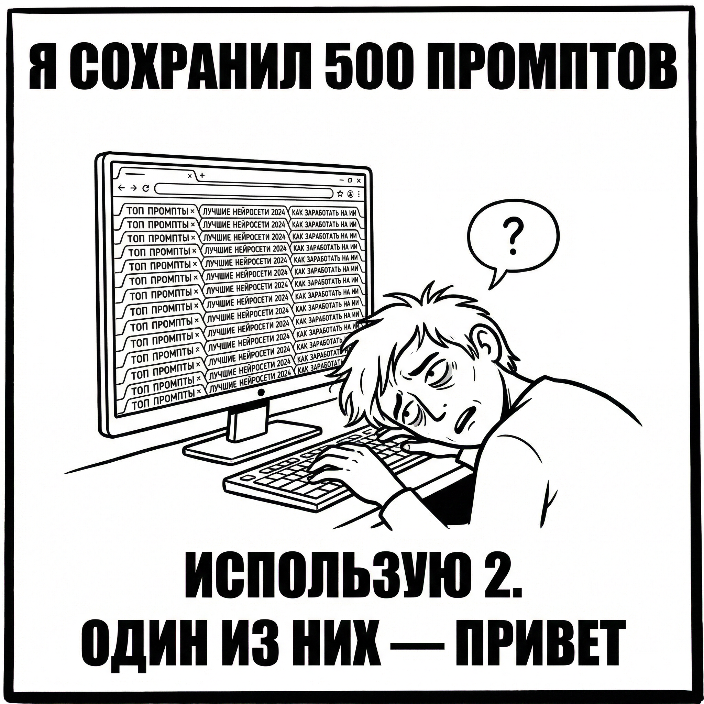
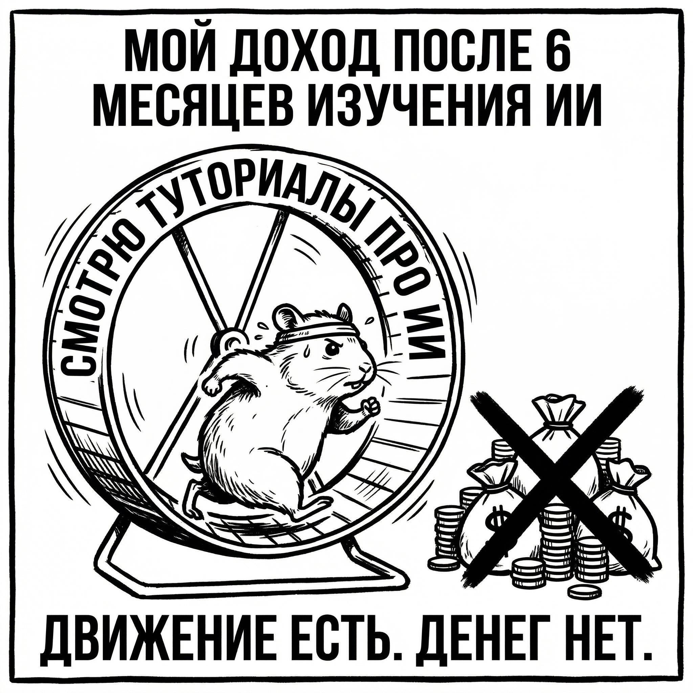
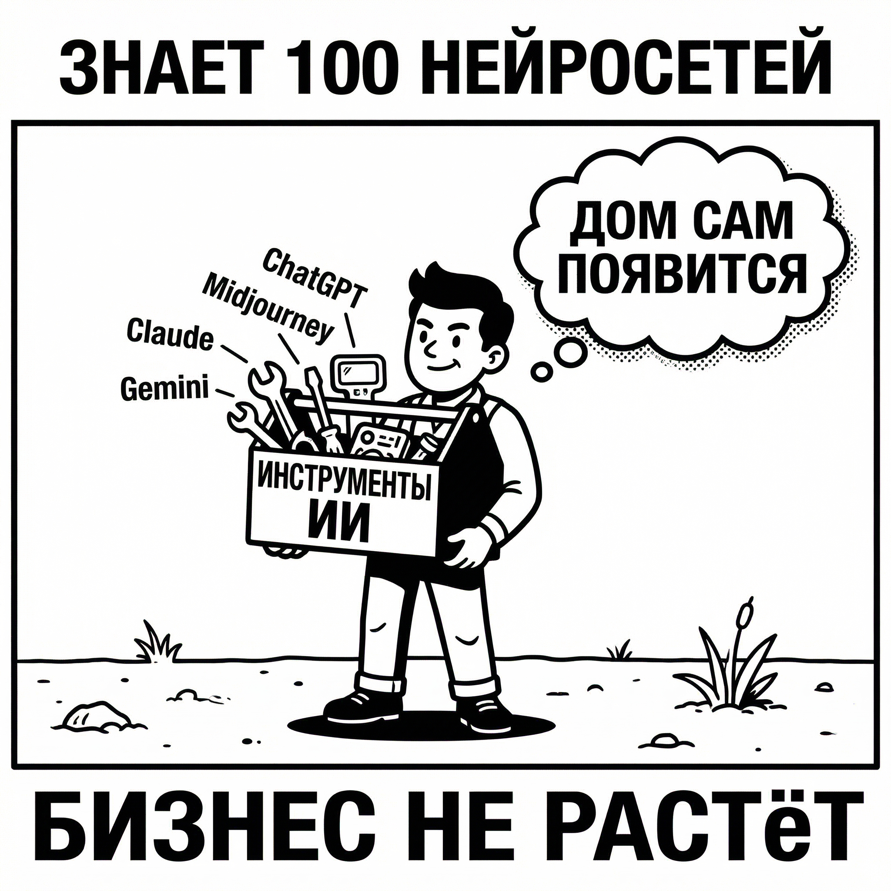
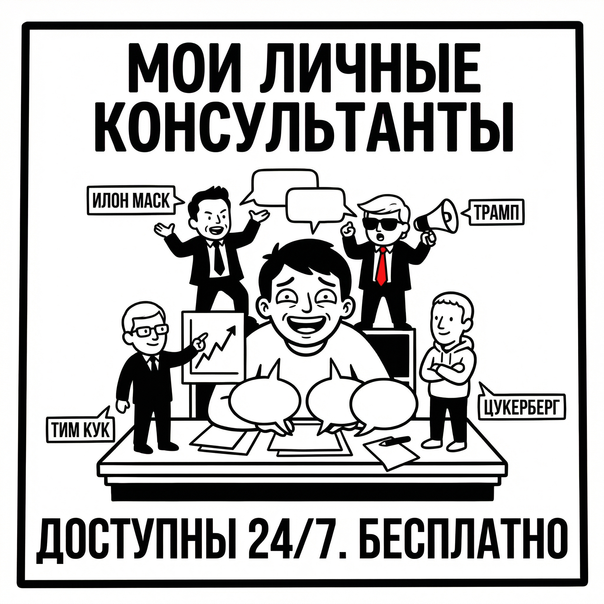
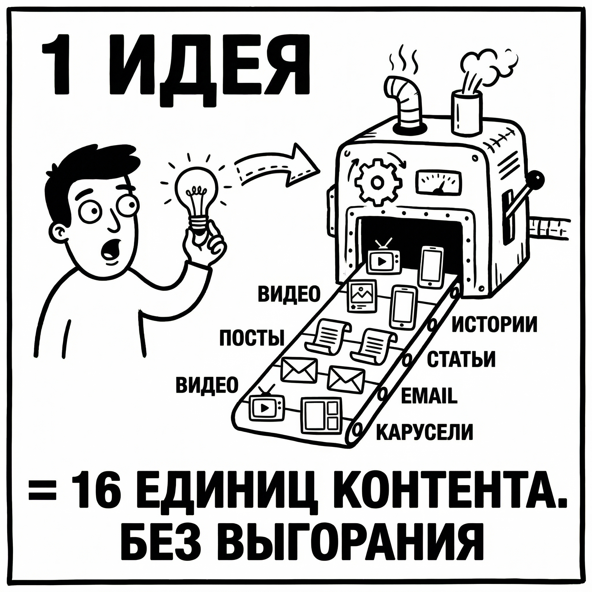
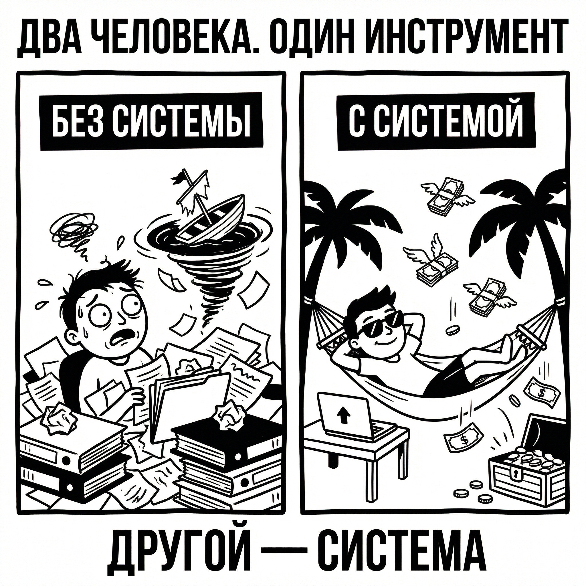
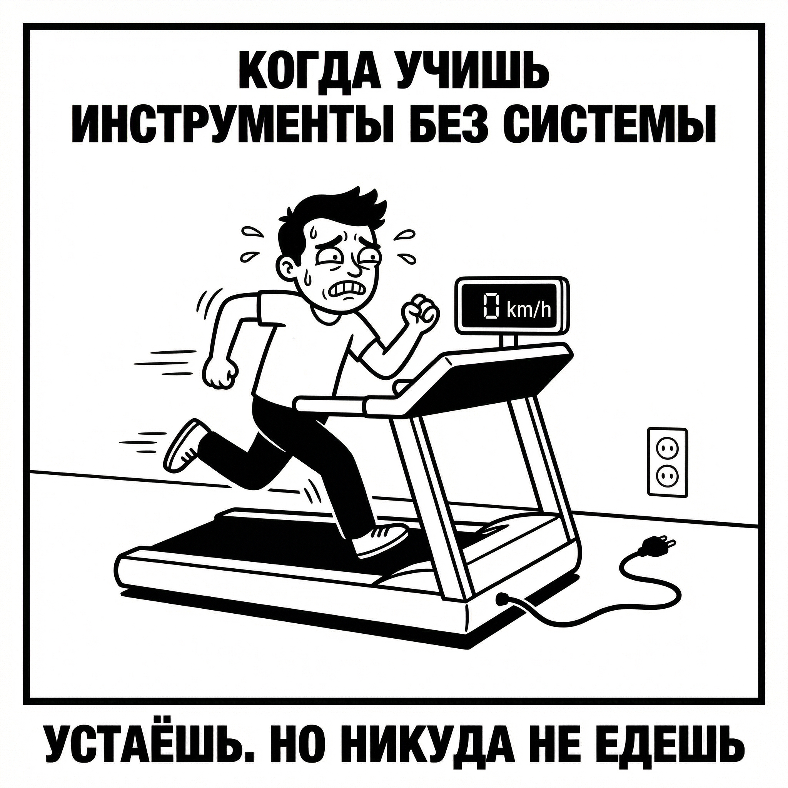
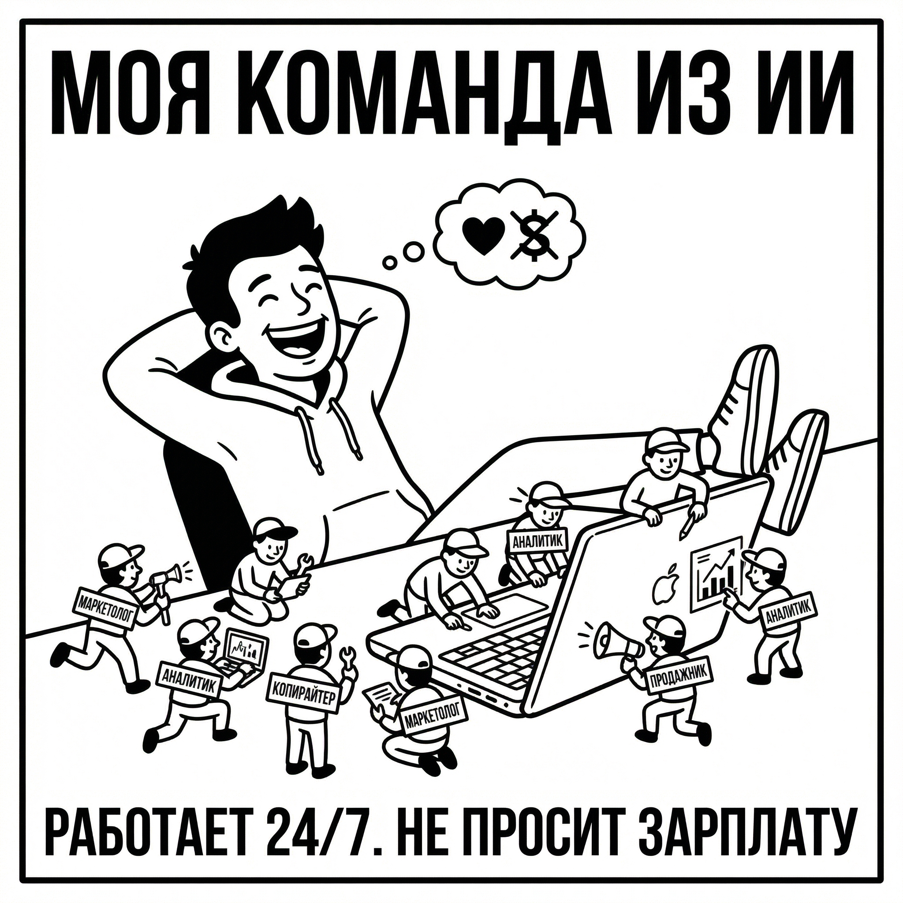

Сейчас ты прочитаешь вещь, которая одновременно успокоит и разозлит.
Если ты уже пробовал ИИ, но:
…это нормально.
Это будет самая полезная статья для тебя и вот почему:
Она убережет тебя от трат времени и денег на ненужные инструменты!
Если хотя бы пару пунктов совпадают, то тебе обязательно нужно дочитать до конца.

Ты чувствуешь, что «поезд уходит» и вроде надо срочно внедрять ИИ, но непонятно что именно.
Ты тратишь время на инструменты, а результата в выручке нет.
Ты думаешь: «Наверное, я не технарь».
Хотя на самом деле проблема не в этом.
Ты устал от хаоса: сервисов много, инструкций много, курсов много, а процессов нет.
Ты не получаешь результат от ИИ не потому, что плохо пишешь промпты. А потому что тебе показывали инструменты, а тебе нужна система внедрения.
Посмотри честно на свой последний год.
Сколько времени ты потратил на изучение нейросетей? Сколько роликов посмотрел? Сколько курсов прошёл? Сколько сервисов попробовал?
Ты сохранял:
Каждый раз было ощущение: «Вот это интересно… надо попробовать.»
Но проходит время. РЕЗУЛЬТАТ — НОЛЬ!
И приходит неприятное осознание:
Ты постоянно что-то изучаешь. Но:

Ты словно на беговой дорожке. Движение есть. Результата нет.
Большинство курсов учат не той вещи. Они учат пользоваться инструментами. Дают 100+ нейронок и промтов, показывают WOW-эффекты, многие из них даже не заморачиваются обучить тебя реальным нейронкам, а дают ботов, где уже собраны шаблоны.
Но ПРАКТИЧЕСКИ НИКТО не учит строить систему внедрения ИИ.
Это как учить человека пользоваться:

…и при этом не объяснить, как построить дом. Он будет знать инструменты. Но дом не появится НИКОГДА.
И главное: тебя не учили отвечать на единственный вопрос, который приносит деньги:
"КАКОЙ ПРОЦЕСС Я МЕНЯЮ В БИЗНЕСЕ/ПРОЕКТЕ И КАК ИИ ДАСТ ИЗМЕРИМЫЙ ЭФФЕКТ?"
Я понимаю твоё разочарование. Когда-то я сама оказалась в той же точке.
Я гналась за инструментами. Сохраняла новые сервисы. Смотрела обзоры. Покупала гайды. Тратила всё больше времени, сил и денег. И жила в постоянной тревоге, что опаздываю. Что где-то уже есть «та самая нейросеть», которую я ещё не попробовала.
А в итоге происходило только одно. Я выгорала. И в какой-то момент я столкнулась с вещью, которая меня по-настоящему шокировала.
Когда я начала изучать, как создаются многомиллионные стартапы в Силиконовой долине, оказалось, что большинство людей там… вообще не знают и половины нейросетей, о которых постоянно говорят в инфопространстве.
Они берут свои существующие навыки, опыт, экспертизу — и усиливают их инструментами искусственного интеллекта.
Проблема не в том, что ты не знаешь все нейросети. Проблема в том, что тебе никто не показал как встроить ИИ в свою систему работы.
Не нужно знать все инструменты. Важно понимать куда, в какой процесс и какую нейросеть поставить, чтобы она усилила тебя в 10–20 раз.
Когда ты начинаешь смотреть на ИИ именно так, происходит магия. Нейросети перестают быть набором игрушек. И превращаются в архитектуру усиления человека.
И именно из этого понимания родился
Протокол внедрения ИИ — это не набор сервисов и не список «100 нейросетей, которые нужно попробовать». Это пошаговая система внедрения, которая встраивает искусственный интеллект прямо в процессы твоей работы и превращает его в реальное усиление.
В результате ИИ начинает работать как:
Другими словами, ИИ перестаёт быть игрушкой. Он становится частью твоей рабочей архитектуры.
Самое неприятное в этой истории то, что потери происходят незаметно.
Ты теряешь деньги в ручных процессах, хаосе задач и дорогих командах, которые делают работу медленно и нестабильно.
Деньги утекают в отсутствие системы контента и прогрева. Сегодня есть пост — завтра нет. Сегодня есть охваты — завтра тишина.
Ты теряешь деньги, потому что делаешь работу дольше, чем мог(ла) бы, и берёшь меньше, чем стоит твой реальный потенциал.
Деньги исчезают в хаосе задач, отсутствии стандартов, бесконечных согласованиях и ручном контроле.
Все эти проблемы выглядят разными. Но на самом деле у них одна и та же причина. Отсутствие системы.
И протокол внедрения ИИ закрывает эту проблему одним механизмом, просто с разными точками входа.
Все они создают систему, благодаря которой ты становишься в 10 раз мощнее и на 5 шагов опережаешь конкурентов!
Внедряя протокол никто не изучает "Лучшие промпты по версии того самого ИИИксперта"
Здесь важно понять САМУ СИСТЕМУ!
Инструменты меняются очень быстро, а СИСТЕМУ можно наложить на любой процесс/проект/бизнес.
ЭТО ВАЖНЫЙ РАЗВОРОТ МЫШЛЕНИЯ!
Я Хочу, чтобы вы поняли именно структуру!
ИТАК:
Шлем к черту всю «теорию про нейросети».
На этом важном этапе нужно выгрузить своё мышление в нейросеть. Обучить её и сделать своим лучшим помощником!
Чтобы ИИ перестал быть "тупым тапочком" тебе важно: настроить память, рассказать ему о себе и своих проектах.
А дальше применить СЕКРЕТНЫЙ инструмент: "НАКОРМИТЬ" свой ИИ лучшей и уникальной информацией профессионалов со всего мира и дать ему инструкции как и когда применять эту информацию.
Давай проще: представь, что Илон МАСК, Дональд Трамп, Тим Кук и Марк Цукерберг, собрались на твоей кухне и 24/7 консультируют тебя, дают советы на основе своего мышления, своих личных побед и поражений!
А другая команда, состоящая из: личного маркетолога, личного бухгалтера, личного SMM-специалиста и личного ассистента, готовы 24/7 решать твои вопросы и знают всё о тебе и твоих проектах!

Имея протокол, ты получаешь: личный бизнес‑ассистент + команда ассистентов за 60–90 минут настройки.
Ключевой прорыв: ИИ перестает быть "чужим" и начинает работать как сотрудник, потому что ты даёшь ему контекст, правила и роль.
Эффект: минус рутина, плюс скорость, плюс качество решений. Это база, на которой строятся следующие 2 уровня.
Предприниматель — эксперт в финансах, хотел запустить первый мини-инфопродукт.
Обычно процесс выглядит так:
Итого: от 7 до 12 недель минимум. Большинство экспертов на этом этапе сдаются. Или откладывают запуск «на потом».
Что произошло с ним? Он использовал систему ИИ-ассистентов.
Не потому что он был умнее других. Не потому что у него был больший бюджет. А потому что у него была система.
Если первый этап превращает нейросети в твою цифровую команду, то второй этап решает другую проблему — масштаб твоего присутствия.
Дело в том, что большинство предпринимателей и экспертов понимают одну простую вещь: без контента сегодня невозможно строить бизнес. Контент — это и охваты, и доверие, и клиенты. Но есть парадокс. Почти все знают, что он нужен, и почти все делают его неправильно.
Контент создаётся в режиме стресса. Сегодня есть вдохновение — выходит пост. Завтра нет времени — всё останавливается. И в итоге происходит знакомая история: неделя активности, потом тишина, потом снова попытка «вернуться в блог».
Алгоритмы на это реагируют просто — они перестают продвигать тебя. Аудитория постепенно остывает. Новые люди не приходят.
И вот тут большинство начинает думать, что проблема в идеях или в креативности.
Но на самом деле проблема не в этом. Проблема в том, что контент создаётся вручную, а не системой.
Когда ты внедряешь второй уровень протокола, происходит очень важный сдвиг. Ты перестаёшь быть человеком, который «иногда делает контент», и становишься владельцем контент-машины.

Сначала нейросеть начинает выполнять работу аналитика. Она смотрит, что происходит в твоей нише: какие темы набирают охваты, какие вопросы задаёт аудитория, какие форматы работают у конкурентов. На основе этого анализа формируется список тем — не абстрактных вроде «поговорим про маркетинг», а конкретных: с углом подачи, эмоциональным триггером и прогнозируемым интересом аудитории.
Дальше происходит следующий шаг. На основе этих тем создаётся материал. Но самое интересное начинается потом.
Один материал начинает масштабироваться.
Представь, что ты записал одно видео — обычный десятиминутный разбор темы. В обычной ситуации оно так и останется одним видео. Но в системе протокола этот материал становится источником целой серии контента. Из него появляется пост. Потом сценарий короткого ролика. Потом карусель. Потом сторис. Потом письмо для рассылки. Потом статья.
Один смысл превращается в десять–шестнадцать единиц контента для разных платформ.
И вот здесь происходит второй ключевой прорыв. Контент больше не зависит от твоего настроения. Он не зависит от вдохновения и не зависит от того, есть ли у тебя время.
Система продолжает работать.
И когда это происходит, начинается то, чего большинство людей никогда не видят — регулярный рост аудитории.
Контент выходит стабильно. Люди начинают приходить. Возникают новые касания с брендом. Но в этот момент появляется следующий вопрос.
Контент создаёт внимание.
А что превращает внимание в деньги?
Ответ — третий уровень.
Большинство людей никогда не доходит до этого этапа. Они застревают на уровне генерации текстов и картинок. Создают посты, ролики, статьи — и ждут, что контент сам начнёт продавать.
Контент создаёт интерес. Продажи создаёт система пути клиента.
Именно поэтому третий этап протокола — это построение нейроворонки.
Нейроворонка — это система, которая превращает интерес в последовательность шагов. Она понимает, кто перед тобой, какую задачу решает человек, на каком этапе он находится, и ведёт его дальше.

Представь типичную ситуацию. Человек видит твой контент. Ему становится интересно. Он переходит по ссылке или пишет кодовое слово. И вместо хаотичного общения начинается система.
Бот приветствует его. Задаёт несколько вопросов. Понимает, что за человек перед ним: новичок, специалист, предприниматель, человек с конкретной проблемой или просто любопытный читатель. На основе этого система предлагает ему нужный материал — не случайный, а тот, который соответствует его ситуации.
Дальше происходит серия касаний. Через пару дней человек получает следующий полезный материал. Потом кейс. Потом разбор типичной ошибки. И в какой-то момент появляется предложение — не внезапное, а логичное продолжение всего пути.
Это и есть нейро воронка.Точнее, один из ее вариантов
В моем проекте построена целая паутина нейро воронок, они соединяются, усиливают друг друга и все это представлено в виде структуры гибридных ботов на ИИ.
Она работает круглосуточно. Она отвечает людям тогда, когда они пишут. Она не теряет заявки. Она не забывает про клиентов.
И в какой-то момент происходит третий ключевой сдвиг. Ты перестаешь надеяться, что «контент когда-нибудь продаст». Ты создаешь систему, где продажа становится естественным финалом пути клиента.
Ты перестаёшь надеяться, что «контент продаст», и собираешь путь клиента так, чтобы продажа стала логическим финалом.
Эффект: трафик и внимание перестают быть красивыми цифрами и начинают превращаться в деньги.
Эксперт в нише нутрициологии. Запуски делала дважды в год. Каждый раз — стресс, выгорание, команда, реклама.
Цикл:
После внедрения нейроворонки всё изменилось. Воронка начала работать постоянно. Новые подписчики попадали в автоматическую прогревающую последовательность.
Продажи происходят каждый день.
Вот здесь и происходит главный эффект протокола.
Цифровая команда ускоряет мышление и решения.
Контент-машина масштабирует присутствие.
Нейроворонка превращает внимание в деньги.
Когда эти три уровня соединяются, происходит то, что я называю масштабированием присутствия.

Ты один. Или с небольшой командой. Но по эффективности ты начинаешь выглядеть как компания из десяти человек.
Не потому что стал(а) работать больше. А потому что рядом с тобой появляется цифровая команда, которая усиливает каждое твоё действие.
Ты создаешь контент быстрее, чем целые отделы маркетинга. И я сейчас говорю не только про сторис или посты. Я говорю про любой тип контента: социальные сети, статьи, сценарии видео, презентации, выступления, лендинги, рассылки, аналитические материалы. Одна идея — и из неё рождается целая система материалов.
Ты отвечаешь клиентам быстрее, чем отделы продаж. Потому что у тебя уже есть структура ответов, сценарии диалогов, логика обработки возражений и система подготовки предложений.
Ты принимаешь решения быстрее, чем конкуренты. Потому что рядом с тобой всегда есть аналитик, стратег и ассистент — только не в виде сотрудников, а в виде интеллектуальной системы, которая работает вместе с тобой.
Снаружи ты остаёшься одним человеком. Но по скорости, объёму и качеству работы ты начинаешь выглядеть как полноценная команда.
ИИ — не заменит людей!
Это усилитель человека.
…значит ты движешься в абсолютно верном направлении.
Ответов всего два.
Внимательно прочитай ещё раз эту статью. Подумай. Переложи всё на свой проект. Разбери процессы. И начинай внедрять это поэтапно.
Это возможно. Но, честно говоря, именно на этом этапе большинство людей и останавливается. Потому что система понятна концептуально, но собрать её в реальности без опыта — намного сложнее.
Собрать эту систему на воркшопе «Протокол внедрения ИИ».
Это три урока + обучающие материалы + стратегическая сессия + карта внедрения протокола ИМЕННО В ТВОЙ БИЗНЕС.
Ты не найдёшь ничего подобного на рынке.
Потому что в этой системе я объединила:
и перевела всё это на максимально простой язык, в понятную и удобную систему внедрения.
Плюс — я протестировала каждую связку на себе и на клиентах, прежде чем показать её тебе.
после которых ИИ становится системой
Ты не получишь «теорию про нейросети». Ты получишь механизм + шаблоны + сборку под себя, чтобы после просмотра можно было сделать буквально в тот же день.
Личный бизнес-ассистент + команда ассистентов за 60–90 минут настройки
Ключевой прорыв: ИИ перестаёт быть "чужим" и начинает работать как сотрудник, потому что ты даёшь ему контекст, правила и роль.
Эффект: минус рутина, плюс скорость, плюс качество решений. Это база, на которой строятся следующие два уровня системы.
Стратегия взрывного роста + омниканальность без выгорания
Ключевой прорыв: ты перестаёшь быть "создателем контента" и становишься владельцем контент-системы, где один смысл превращается в поток.
Эффект: стабильно растёт аудитория и количество входящих касаний. Без состояния: «сегодня я в ресурсе» или «сегодня я ничего не выложил».
Нейроворонка и автоматизация CJM
Ключевой прорыв: ты перестаёшь надеяться, что «контент продаст», и собираешь путь клиента так, чтобы продажа стала логическим финалом.
Эффект: трафик и внимание перестают быть красивыми цифрами и начинают превращаться в деньги.
настройка + что загрузить + как ставить задачи
Маркетинг / Аналитика / Стратегия / Копирайт / Продажи / PM
контекст, чтобы ИИ работал "как ты" + чек-лист качества
матрица омниканальности + технология «1 → 16 единиц контента»
рост подписчиков → тёплая комната → заявка
что сделать первым, чтобы эффект был быстрым

Давай на секунду честно разложим, что именно ты получаешь. Потому что это не «три урока про нейросети». Это система внедрения ИИ в бизнес, которую обычно собирают годами.
Вот из чего она состоит.
Каждый участник воркшопа получает персональный стратегический разбор проекта и индивидуальную маршрутную карту роста.
Это не "поговорить о бизнесе".
Это полноценная стратегическая сессия, на которой мы разберём ваш проект так, как обычно разбирают компании перед масштабированием.
конкретный план роста вашего проекта.
вы выходите с созвона, открываете ноутбук и точно знаете, какие действия дадут результат быстрее всего.
Без догадок.
Без "попробую и посмотрим".
Без хаотичного маркетинга.
Только понятная система действий.
И давайте честно.
Обычно такие стратегические разборы стоят десятки тысяч рублей.
Здесь вы получаете его в подарок просто за участие в воркшопе.
По сути вы оплачиваете воркшоп — и получаете личную стратегию для своего проекта.
Если у вас есть бизнес, блог или экспертный проект — этот бонус один уже окупает участие многократно.
Потому что сейчас моя цель — не заработать на этом продукте. Моя цель — чтобы как можно больше людей начали внедрять систему.
Но есть ещё одна причина. И она довольно честная.
Я хочу собрать очень сильную команду. Моя цель — создать большую систему людей, которые умеют внедрять ИИ-протоколы в бизнесы. Причём не в маленькие проекты. Я говорю про крупные компании и серьёзные бизнесы.
Но такие команды не собираются по резюме. Их находят по мышлению и результатам. Поэтому эта цена — это ещё и фильтр.
Когда через систему проходит большое количество людей, очень быстро становится понятно:
И среди них появляются те самые бриллианты. Люди, которые: быстро думают, быстро внедряют, быстро получают результат.
Конечно, не все из вас захотят работать со мной. Кто-то пришёл просто посмотреть. Кто-то хочет применить систему в своём бизнесе. И это нормально. Но низкая цена позволяет мне очень быстро находить сильных людей.
Я гарантирую, что тебе понравится этот воркшоп. Если вдруг информация окажется для тебя бесполезной — я верну тебе деньги без вопросов. Полный возврат.
Но есть нюанс. Если ты оформляешь возврат — это означает 100% блокировку твоего аккаунта, почты и номера телефона, и ты больше никогда не сможешь купить мои продукты. Почему? Потому что я хочу работать с людьми, которые действительно хотят внедрять систему, а не просто посмотреть из любопытства.
Ты можешь продолжать:
или за 1 900 рублей получить систему, на сборку которой у большинства людей уходят годы.